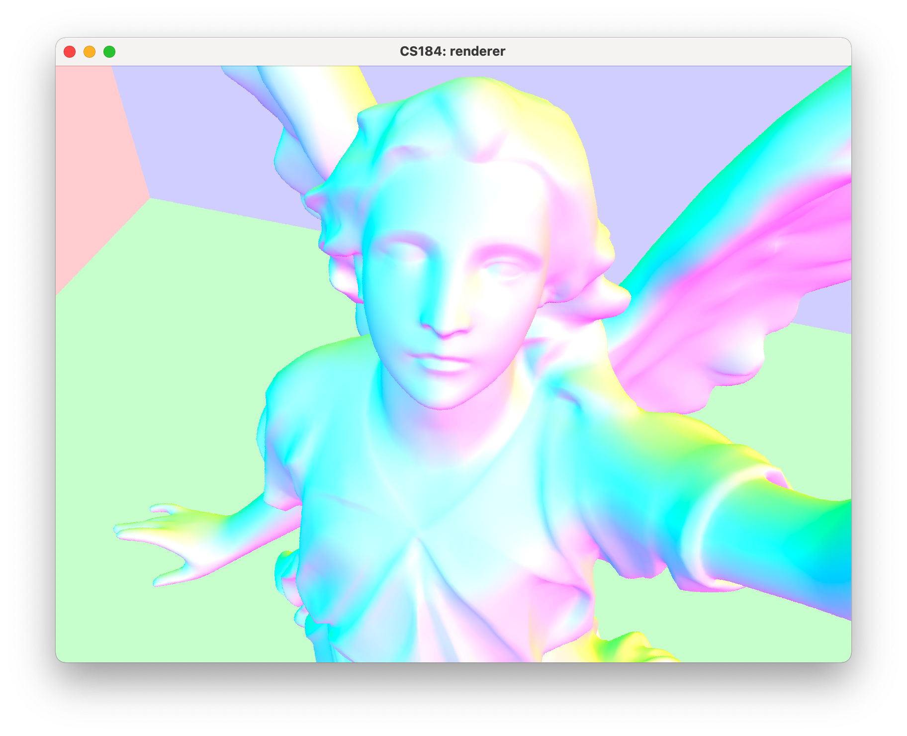

Project 3-1: Pathtracter 1
CS 184: Computer Graphics and Imaging, Spring 2022
David McAllister and James Dai
Part 1: Ray Generation and Scene Intersection
Ray generation involves generating rays that originate at the sensor and pass through the sensor at various locations within each pixel. These locations are uniformly distributed across each pixel, allowing us to send more samples to better approximate the expected image.
Ray-triangle intersection has multiple parts. The first is to calculate the time t of intersection. This, however, does not always tell us if it actually intersects the geometry, so we need to calculate the barycentric coordinates of the hit point. If any of these are less than 0, we know there is no intersection. If they are all above zero and sum to one, there is an intersection and we can use these coordinates to interpolate a normal shading.
Ray-sphere intersection is quite a bit simpler. We get two intersection times, which specify the entry and exit times. If the ray is perfectly tangent to the sphere, we would only get a single intersection time. These values allow us to determine if the intersection was valid.
Regardless of the intersection type, we only want to intersect the nearest geometry, so we update the ray's max_t and only observe intersections with lower, still positive t values.

CBspheres_lambertian with normal shading and no BVH acceleration.

teapot.dae with normal shading and no BVH acceleration.
cow.dae with normal shading and no BVH acceleration.
Part 2: Bounding Volume Hierarchy
For the BVH algorithm, we first found the centroid of the expanded bounding box that covers all the primitives. We then utilized this point to calculate how many primitives would be on the left and right of the x, y, and z axes respectively. This heuristic allowed us to essentially calculate which axis would allow us to get the best split of the primitives by calculating the minimum of the absolute value of the # of primitives on the left of a given axis minus the # of primitives on the right of a given axis. Utilizing this new split, we created two vectors and appended all the primitives that are on the left and right of the split line to their corresponding vectors. Finally, we used these vectors to partition the original primitives vector, shuffling it so the left primitives are on the left side and the right primitives are on the right. We then recurse with the pointers corresponding to the start and end of the left primitives and the pointers corresponding to the start and end of the right primitives. When the size of the split is less than max_leaf_size, we can terminate the recursion.
BVH-accelerated and non-accelerated normal shading render times for various input files:
| File | Non-BVH (s) | BVH (s) |
|---|---|---|
| sky/CBspheres_lambertian.dae | 0.1426 | 0.0995 |
| meshedit/cow.dae | 42.8786 | 0.0778 |
| meshedit/teapot.dae | 17.7097 | 0.1699 |
Normal-shaded renders of complex geometry that would be infeasible without BVH-acceleration:
dragon.dae rendered with normal shading.
blob.dae rendered with normal shading.

CBlucy.dae rendered with normal shading and adjusted perspective.
Part 3: Direct Illumination
For the estimate_direct_lighting_hemisphere function, we uniformly sampled a ray from the CosineWeightedHemisphere. Since the hemisphere sampler is in object space, we transform it into world space and use our BVH data structure to see if the world vector intersects with any primitives in log(n) time. If it does, we sample the BSDF function with w_out and our sampled w_in (all from object space) to see how much light is reflected towards w_out (i.e. the camera in the case of a primary ray). We normalize by the PDF of selecting this direction (in this case a factor of pi since it is uniform) and the BSDF function. Finally, we aggregate this into a total light and average it out.
The estimate_direct_lighting_importance function is fairly similar but now utilizes the locations of the lights more directly. We loop over all the lights in our scene and sample the light radiance that will hit our hit point using the sample_L function. We do this a number of times per light specified by the -l parameter. We then similarly calculate the reflection from the hemisphere function above to aggregate the light. Importance lighting allows us to also sample point lights, which don't work with hemisphere sampling since the likelihood of a random ray intersecting it is zero.
Direct illumination hemisphere vs. importance comparison:
bunny.dae rendered with 8 samples per pixel and 16 hemisphere samples per light.
bunny.dae rendered with 8 samples per pixel and 16 importance samples per light.
Soft shadow comparison with more importance samples per light.
bunny.dae rendered with 1 sample per pixel and 1 sample per light.
bunny.dae rendered with 1 sample per pixel and 4 sample per light.
bunny.dae rendered with 1 sample per pixel and 16 sample per light.
bunny.dae rendered with 1 sample per pixel and 64 sample per light.
As shown in the images, increasing the samples per light dramatically reduces noise in the soft shadows under the bunny. It also lower noise in non-shadow areas, but less noticeably.
Importance sampling way outperforms hemisphere sampling. While hemisphere sampling hopes to intersect all light sources enough times to render acceptable shadows, importance sampling only intersects light sources and geometry directly blocking light sources. This greatly reduces noise in shadows as well as directly illuminated sections of the image. While both will converge to the expected image with enough samples, importance sampling will get there much more quickly. In this way, it makes low-noise pathtracing computationally tractable.
Part 4: Global Illumination
Our implementation of the indirect lighting function wraps around our implementation of the direct lighting function. It casts rays which intersect geometry and compute the "one-bounce" or direct lighting at that intersection. Instead of stopping there, we uniformly sample a unit hemisphere and send out another ray to do the same. This ray's returned illumination is then normalized by its angle of incidence, probability of being cast in that direction, and intersection's reflective properties. This recursive ray generation can be terminated in two ways. First, we specify a max ray depth at which rays stop being generated. Second, we introduce a termination probability of 0.3 at each bounce, implementing russian roulette. This introduces an additional normalization factor and returns our estimation to being unbiased.
Direct vs. global illumination:

CBspheres_lambertian.dae rendered with 1024 samples per pixel and only direct illumination.

CBspheres_lambertian.dae rendered with 1024 samples per pixel and both direct and indirect illumination.
Only direct vs. only indirect illumination:
CBspheres_lambertian.dae rendered with 1024 samples per pixel and only direct illumination.
CBspheres_lambertian.dae rendered with 1024 samples per pixel and only indirect illumination.
Max ray depth comparison (-m):
bunny.dae rendered with 1024 samples per pixel and a max ray depth of 0 (zero-bounce).
bunny.dae rendered with 1024 samples per pixel and a max ray depth of 1 (direct lighting).
bunny.dae rendered with 1024 samples per pixel and a max ray depth of 2.
bunny.dae rendered with 1024 samples per pixel and a max ray depth of 3.
bunny.dae rendered with 1024 samples per pixel and a max ray depth of 100.
Pixel sample rate comparison (-s):

CBspheres_lambertian.dae rendered with 1 sample per pixel.
CBspheres_lambertian.dae rendered with 2 samples per pixel.
CBspheres_lambertian.dae rendered with 4 samples per pixel.
CBspheres_lambertian.dae rendered with 8 samples per pixel.
CBspheres_lambertian.dae rendered with 16 samples per pixel.
CBspheres_lambertian.dae rendered with 64 samples per pixel.
bunny.dae rendered with 1024 samples per pixel.
Part 5: Adaptive Sampling
We created two variables s1 and s2, which essentially aggregates the illuminance and illuminance squared respectively. We then calculate the mean and variance by simply following the formulas from the spec. We then calculate the interval and ensure it is less than our max_tolerance * mean. If it is, then we are 95% confident that the pixel lighting has converged. Therefore, we can break out of our loop early. This allows more computational resources to be applied to parts of the image that are the most difficult to compute.
Adaptive sampling rate over image:

CBspheres_lambertian.dae rendered with a maximum of 2048 samples per pixel, 1 sample per light, and 5 samples per light.
Visualization of adaptive sample rate across the image, with red representing higher rates and blue representing lower rates.
Extra: WALL-E
We rendered Wall-E in 1080p.
CSS styling provided by StackEdit Markdown to HTML. stackedit.io